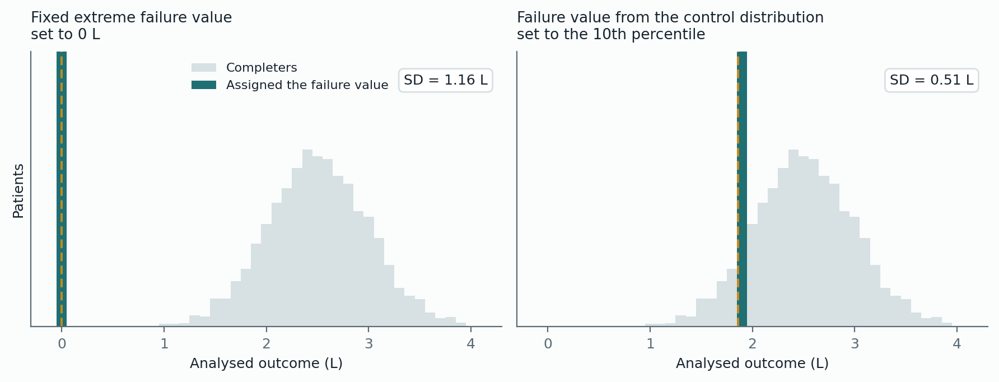
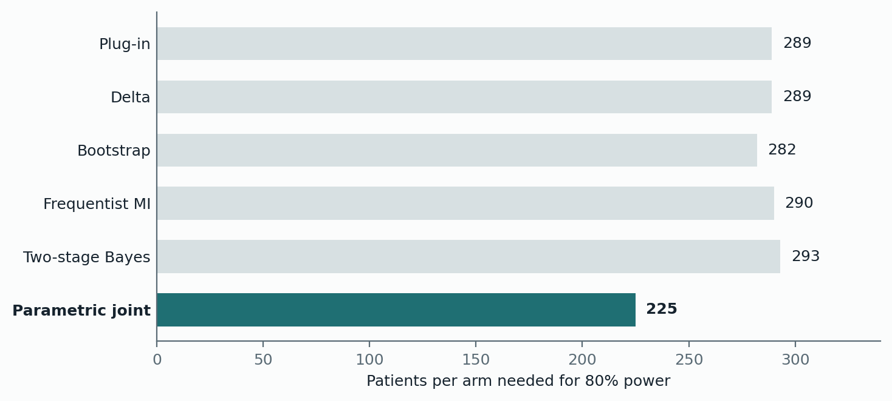
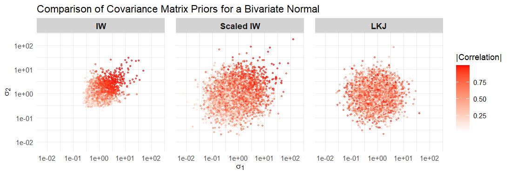

Pascarella, K., and Seaman, J. W. A Bayesian approach to the composite strategy for handling intercurrent events for continuous outcomes. Manuscript in preparation for the Journal of Biopharmaceutical Statistics.
Research
Dissertation · Baylor University · 2026
What number do you write down for a patient who leaves the trial?
Answering this question requires choosing a strategy to handle intercurrent events. My dissertation work is about composite strategy, and for binary endpoints this answer is easy — the event is just another failure. For continuous endpoints it is trickier: what value represents failure? And what are the consequences of choosing this value?
Estimand
The precise quantity a trial is trying to measure — stated before the trial starts, including what happens to patients who deviate from the plan.
Intercurrent event (ICE)
Something that happens after randomization and disrupts the endpoint: stopping treatment, starting rescue medication, death, etc.
Composite strategy
One of five approaches in ICH E9(R1). It folds the intercurrent event into the outcome itself rather than treating it as missing data.
Failure value
The number assigned to a patient who had an intercurrent event, so they can stay in a continuous analysis. Written υ throughout.
Patients who experience an ICE
Suppose a respiratory trial measures FEV1, or how much air a patient can force out of their lungs in one second. It is a continuous number, in liters, and at the end you compare the average in the treated group to the average in the control group.
Trials can be messy. Some patients stop taking the drug, some need rescue medication, some die. These are called intercurrent events, and they leave you holding a set of patients with no usable endpoint measurement.
Dropping them would be throwing away information. The patients who leave a trial are often the ones doing worst, so analyzing only the ones who stayed makes almost any drug look better than it is. The composite strategy — one of five approaches set out in the ICH E9 (R1) regulatory guidance — takes the opposite position: leaving the trial is itself part of the outcome. When the outcome is continuous, assign those patients a failure value and analyze everyone together.
That creates a question: what failure value should you use?
The issues with current practice
There is no hard rule on how to choose this value. The common practice varies across trials. Some pick something that sounded appropriately bad: zero, or the worst result anyone in the trial recorded. Two things go wrong with these options.
The first is that it cannot be defended. As Bell and colleagues put it in a 2025 presentation, there is no principled reason failure should be −16 units rather than −17, for example. The number ends up looking like a choice the sponsor made, because it is.
The second is that it has statistical consequences. Assigning a quarter of your patients an extreme value creates a two-humped distribution. The variance of the endpoint inflates, and the sample size needed to detect a real effect can rise several-fold — enough to make a trial infeasible.

A recent proposal by Bell et al. repairs the arbitrariness: define the failure value relative to the control population — say, the 10th percentile of patients on standard of care. Now it carries a clinical interpretation, and it sits inside the range of outcomes real patients actually have.
The part that motivated my dissertation
That percentile is a property of a population nobody can observe. It has to be estimated from the control patients in your own trial, which means the failure value is not a known constant. It is an estimate, and it therefore carries uncertainty of its own.
Writing it down makes the issue plain. Each patient’s analyzed outcome is
\[ y_i^{*} = \begin{cases} y_i & \text{if the patient completed} \\ \upsilon & \text{if an intercurrent event occurred} \end{cases} \]
and under a quantile definition the failure value is
\[ \upsilon = \nu + \Phi^{-1}(q)\,\omega , \]
where \(\nu\) and \(\omega\) are the mean and standard deviation of outcomes among control patients, and \(q\) is the chosen percentile.
Without a variance correction, you would estimate \(\nu\) and \(\omega\), plug them in, and carry on as though \(\upsilon\) were exact. That understates how much you don’t know. Intervals come out too narrow, and the trial reports more certainty than it earned.
This is where a Bayesian treatment does real work rather than decorative work. Treat \(\nu\) and \(\omega\) as unknown quantities with prior distributions, and uncertainty about the failure value propagates through to the treatment effect on its own — no separate variance correction required.
Two estimators
We developed two approaches, and they are genuinely different tools rather than one better and one worse.
| Two-stage estimator | Parametric joint model | |
|---|---|---|
| How it works | Stage one estimates the failure value from control completers. Stage two carries its entire posterior — not a single number — into the treatment effect, by Bayesian multiple imputation. | Models the outcome and the occurrence of intercurrent events at once, then recovers the marginal effect by G-computation: predict every patient under each arm, average, difference. |
| What it assumes | Nothing about why patients left the trial. | A specified model for dropout, including which covariates drive it. |
| Strongest when | The dropout mechanism is poorly understood, robustness has to be demonstrated, or the control arm is small enough to want historical data through the prior. | Dropout is plausibly explained by observed covariates, baseline correlates strongly with outcome, and power is the design priority. |
| The trade | Widest intervals of any method tested — it buys stability with precision. | Coverage slips modestly when dropout rates are severely lopsided between arms. |
Both share the property that matters: uncertainty in the failure value propagates on its own, through posterior sampling, rather than needing a variance correction bolted on afterwards.
What the simulations showed
I evaluated both against four frequentist benchmarks across more than 120 scenarios, 5,000 replications each.
The joint model was consistently the more efficient of the two. Under a modest true effect and 30% dropout in both arms, it reached 80% power with roughly 225 patients per arm, against 282 to 293 for every other method tested — about a fifth fewer patients, which is real money and real time.

The two-stage estimator was the more robust of the two. It held interval coverage near its nominal level across a wide range of conditions, including non-normal outcomes and dropout that depended on the very outcome that went unmeasured. It buys that stability with wider intervals, which makes the choice between the two a genuine trade rather than a ranking.
Two caveats I would want a reader to take away with the results.
The efficiency gain belongs to the joint model’s structure — estimating the failure value and the treatment effect together, from the full sample.
The two-stage model is more similar in structure to the frequentist alternatives. It also requires fewer assumptions and only puts priors on the control group, which may make it friendlier to regulatory agencies.
The other half of the dissertation
An earlier chapter deals with preclinical pharmacokinetics. In small-animal studies each animal is often measured once and then sacrificed, so no single subject has a complete concentration-time curve, which complicates estimating drug exposure and the quantities derived from it.
The problem I took up there is one of prior specification. Existing Bayesian approaches put an inverse-Wishart prior on the covariance matrix. It is convenient and conjugate, but it does not let you separate what you believe about the variances from what you believe about the correlation between compartments. This is an issue especially if you believe you are using noninformative priors when in fact you are not. The two are bound together by the structure of the prior, so it is impossible to be noninformative about both at the same time — and in a design this data-poor, the prior carries real weight in the inference.

An LKJ prior on the correlation, with separate priors on the standard deviations, removes the entanglement and lets each component be specified independently. A second addition — a regression-based prior encoding the biological relationship between plasma and tissue concentrations — brings genuine information to a design that carries very little data per animal. Both sharpened inference, with the clearest gains in bioequivalence assessment and when tissue measurements were incomplete.
Publications and presentations
Alnazeer, M., Fan, J., Giang, T., Euell, C., Lee, J., Izekor, B., Perez, C., Zamin, S., Pascarella, K., Banchs, J., & Olsovsky, G. Robotic magnetic navigation versus manual catheter ablation for premature ventricular contractions: a single-center retrospective cohort study. Journal of Innovations in Cardiac Rhythm Management.
Pascarella, K. A Bayesian approach to the composite strategy for handling intercurrent events for continuous outcomes. Joint Statistical Meetings, Boston, MA. Download the poster (PDF)
Pascarella, K. A Bayesian approach to the composite strategy for handling intercurrent events for continuous outcomes. Midwest Biopharmaceutical Statistics Workshop, Carmel, IN.